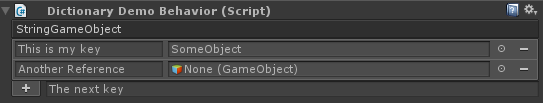

Inspect Everything
Simply extend from BaseBehavior instead of MonoBehaviour, and you'll be able to use any of the following types in your behaviors:
- interfaces/abstract types (the implementation is selected in the inspector)
- structs
- dictionaries
- arbitrary generic types
- properties
- a better array / list editor (using Rotorz)
- tooltips and comments via attributes on fields/properties/types
For example, using a dictionary couldn't be easier. Here's how to do it:
[JsonObject(MemberSerialization.OptIn)]
public class DictionaryDemoBehavior : BaseBehavior {
[JsonProperty]
public Dictionary<string, GameObject> StringGameObject;
}
With that code, you get this awesome editor:
As you can tell, Full Inspector cleanly integrates Json.NET serialization into Unity.
Day to Day Usage
These are some guidelines that you need to keep in mind when programming. They are simple and obvious.
- Derive from
BaseBehavior, notMonoBehaviour(enables the custom editor) - If you override
Awake, callbase.Awake()immediately (enables deserialization from JSON) - Annotate your object with
[JsonObject(MemberSerialization.OptIn)]and members with[JsonProperty](specifies what should be serialized) - Wrap
Componentreferences withRef<>(enables partial component serialization)
Issues
If you have found a bug or general issue, please report it here.